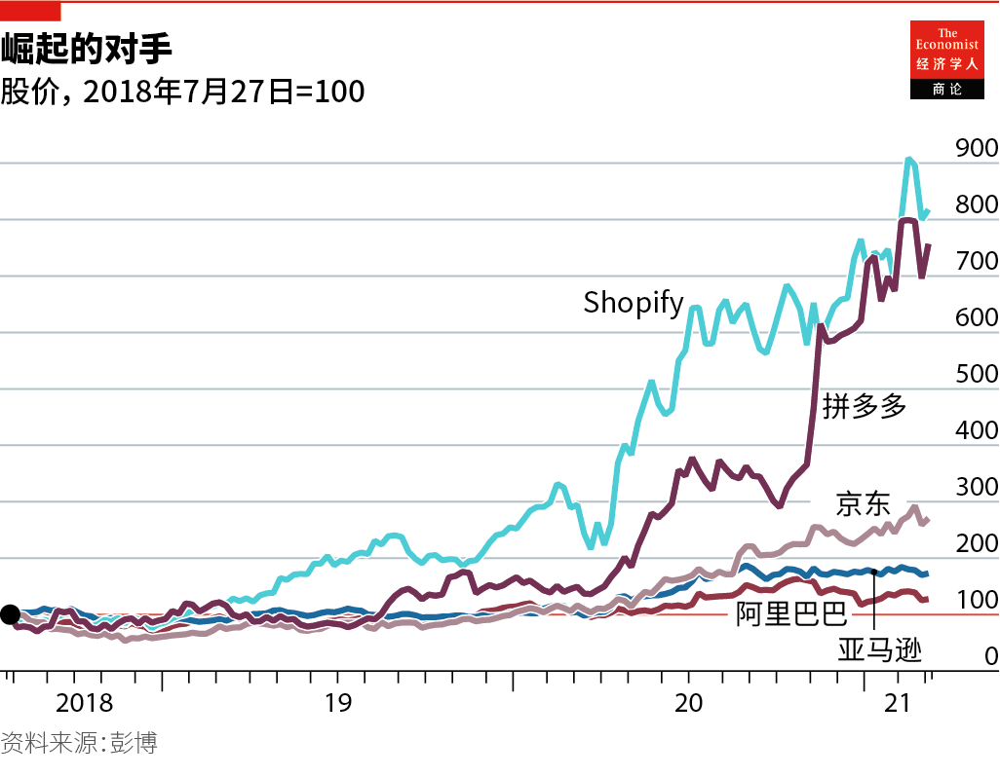
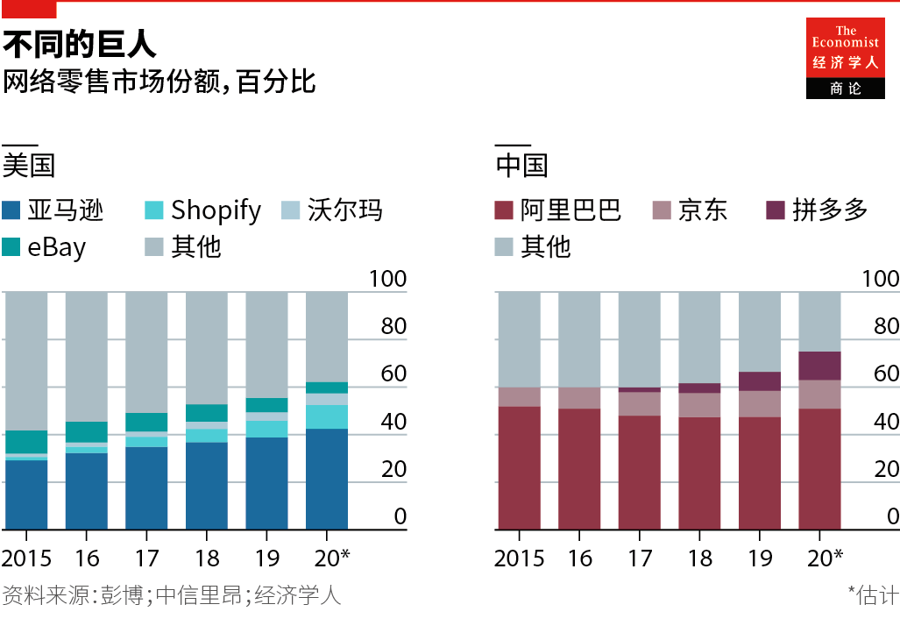
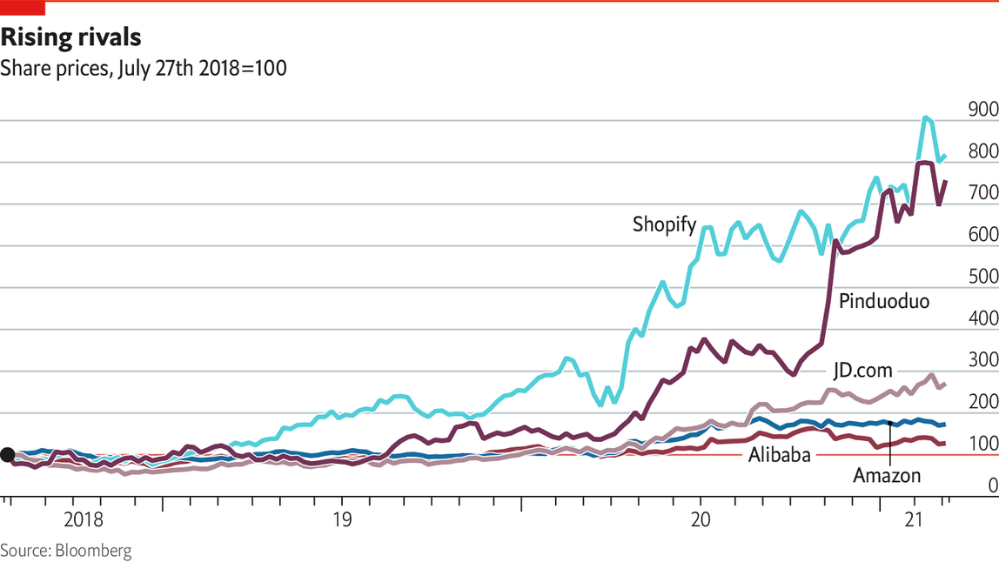
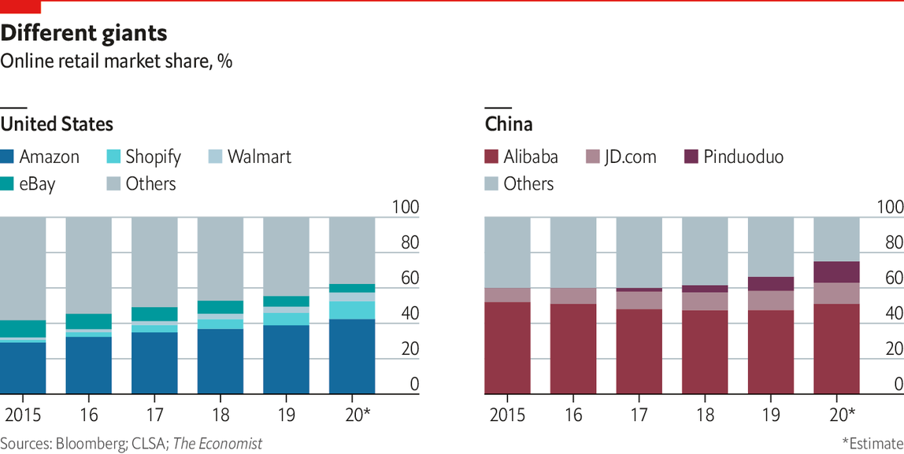

2021-03-31T02:52:55+00:00
市场
去平台化
亚马逊们和阿里巴巴们并不像反垄断官员们认为的那样坚不可摧【专题报道《购物的未来》系列之二】

这些日子里零售商聊得最多的电子商务公司不是美国巨头亚马逊，也不是中国老大阿里巴巴，而是拼多多——一家2015年创建的中国公司，起初是一家线上食品供应商，后来大获成功，目前市值已突破2000亿美元。去年它股价大涨了330%，是上涨最快的中国互联网公司。
拼多多吸睛的原因有两个。一是商业模式。公司战略副总裁九鼎解释说，它搭上了智能手机在中国加速普及的列车，创造出了一种新型电子商务体验：人们聚集到一起，拼单购买从扫地机器人到香蕉的各种商品。疫情期间，它扩展出了一项增长迅速的业务，覆盖成千上万个城镇和乡村：那里的拼多多用户凑在一起以便宜的价格购买地方农产品送货到社区。有人称之为“社区团购”。九鼎则称之为“互动商务”。它是目前中国互联网最红火的部分之一。
其二是拼多多如何粉碎了网购巨头的堡垒坚不可摧的错误认知。仅仅几年前，中国的电子商务市场似乎还是阿里巴巴及其竞争平台京东的两方较量。时过境迁。经纪公司里昂证券（CLSA）的梁向奕预计，2021年拼多多在中国线上零售中的份额将超越京东。她预计它的用户数会赶超阿里巴巴。尽管拼多多投入了巨额补贴来把中国较贫困地区的顾客吸引到自己的应用上，但她认为它今年有可能实现盈利。
值得注意的是，它能做到这些，更多是因为撬开了规模更大的竞争对手尚未能覆盖的市场，而不是抢夺它们既有的市场。尽管疫情期间食品杂货在线销量猛增，但8.1万亿元的农产品市场以数字途径买卖的尚不足一成。“我们正在继续把饼做大。”九鼎表示。这个经验也适用于其他领域。无论一个市场看起来如何胜负已定，都仍有新贵崛起的机会，因为电子商务仍处于发展的早期。
由于反垄断部门所采取的行动，中国的竞争议题导致股价大幅波动。2020年11月，国家市场监督管理总局发布了旨在维持有序竞争的平台经济反垄断指南草案。12月，当局加强了对2008年反垄断法的执法，这导向了新的调查和罚款。相关措施包括审查并购、社区团购模式、价格折扣，以及歧视竞争对手。梁向奕在1月写道，鉴于互联网平台对行业、经济和消费者的冲击力，它们被迫分拆的可能性非常小。但她预期会出台更多监管法规，尤其是在客户数据方面。
盛博的分析师朱镔表示，这轮打击行动意味着科技平台可能必须收敛激进的销售手法，比如以超高折扣出售商品。这可能会降低它们的增长速度，但它们带来的工作岗位、创新，以及对消费者支出的支撑都在为它们辩护。阿里巴巴看来是最大的目标，但拼多多也已招来不少批评。朱镔认为，阿里巴巴处境最为危险，部分原因是其姊妹公司蚂蚁集团受到的压力。但他说，中国零售销售的多达五分之一流经它的大门。他指出，中国监管部门强调对平台经济的支持，因此压制行动不大可能是摧毁性的。
中国零售市场的激烈竞争表明，没有哪个平台——无论它规模多大——可以期望完全主导这个市场。除拼多多外，阿里巴巴、京东和外卖公司美团也都在通过社区团购和其他方式瞄准中国的中低端城市。阿里巴巴的淘宝直播平台带动了实时流媒体和视频的增长，名人和网红们在其中叫卖大打折扣的品牌商品。但是，呈爆炸增长的直播市场已经吸引来强劲的竞争者，例如社交媒体应用抖音。阿里巴巴的竞争对手腾讯拥有的超级应用微信允许品牌在其平台上销售，并为顾客提供即时数字支付权限。每个人都想在线上广告中分一杯羹。在直播中尤其如此，时尚美容分析公司Launchmetrics的迈克尔·杰伊（Michael Jais）说，因为在直播中很容易通过实时数据来衡量支付的广告费是否值得。
相比之下，在欧洲和美国，人们认为亚马逊已经赢得了这场比赛。亚马逊在美国电商市场的份额与第二名沃尔玛之间的差距远远大于阿里巴巴在中国领先第二名的差距。尽管盛博的马克·谢穆里克（Mark Shmulik）认为亚马逊的核心零售业务几乎还没有赚到什么利润，但它快速增长的云和在线广告业务产生了巨大的利润，可拿来投入到零售业的扩张中。2020年底，它的资产负债表上有420亿美元现金。咨询公司贝恩（Bain）的马克-安德烈·卡梅尔（Marc-André Kamel）说，亚马逊未来五年在信息技术上的支出，可能比全球前十大传统零售商中的任何一家都要多1000亿美元。它还将继续在物流上大举砸钱，给UPS和联邦快递（FedEx）等公司带来更大的压力。
和中国的阿里巴巴一样，亚马逊也招致了监管压力。2020年10月，美国国会的一个委员会表示，它正考虑全面改革反垄断法规以对抗大型科技平台的影响力。这引来人们关注亚马逊在其市场上对第三方卖家的支配地位，以及推出与第三方卖家竞争自家商品的做法。11月，欧盟委员会指控亚马逊使用来自第三方卖家的非公开数据助力自己的零售业务，违反了竞争法。
亚马逊说这些都是无稽之谈。尽管它笑傲美国的线上市场，但以总销售额计沃尔玛的规模更大。亚马逊在书籍等品类中称霸，在食品杂货这一块却并不起眼。反垄断官员可能会关注它如何在自家网站上销售产品与第三方产品竞争，但这与大型零售商销售自家品牌并没有什么不同。亚马逊也有政治资本。摩根士丹利的布莱恩·诺瓦克（Brian Nowak）表示，它提供的工作岗位、对中小企业的支持以及它的技术实力都可能对它有利。
亚马逊的创始人贝索斯最近决定把CEO一职转交安迪·雅西（Andy Jassy），这不会终结监管的火力。但如果压力增大，它可能会剥离全球最大的云计算公司亚马逊网络服务（AWS）。和中国的情况一样，只要饼还在变大，就可能出现新的挑战者。有些将来自科技巨头。许多在线零售商向Facebook和谷歌付费，让自家产品能通过搜索被找到。在线广告仍然是这两家巨头最强大的业务，但它们正在增加销售渠道。Facebook网站上已有1.6亿家小企业，去年它让这些企业可以在Facebook和姊妹平台Instagram上开设同一家店面。去年，谷歌不再向从它的网站直接销售产品的零售商收取佣金。
另一个竞争源头是网上购物的变化。在欧美，电子商务可能更多将通过智能手机而非个人电脑发生。这将促进“社交商务”（也就是通过社交媒体和视频做商务）的普及。据《金融时报》报道，作为一个提升品牌知名度的媒介，抖音国际版TikTok可能会让它最受欢迎的红人们在它的平台上营销产品。这场战争将扩大到物流和支付服务部门。在美国，亚马逊自己递送的自家包裹超过了UPS为它递送的量。但像沃尔玛这样的竞争对手正在开发类似亚马逊金牌会员（Amazon Prime）的订户服务，将提供免费送货和其他福利。
税收是另一个威胁。无论东方西方，税务部门都已盯上了数字巨头。2020年亚马逊的应纳税额大幅增加，但拜登政府还在考虑对美国最赚钱的一批公司征收更高的税。欧洲各国政府对科技公司征收数字服务税，以迫使它们在自己消费者所在的地区缴纳更多。一些政府已经提请大家注意，与商业大街上的零售商相比，电子商务平台为城外仓库支付的营业税较低。甚至中国也计划对其最大的科技公司提高税收。
最终，更高的税收、更严格的监管审查，以及日益激烈的竞争可能会让巨头们更难在电子商务中赚到利润。但是，即使它们最终受到如公用事业般的监管，也没什么人会为它们掬一把同情泪。到目前为止，电商巨头们都取得了骄人的成绩。
2021-03-31T02:52:55+00:00
The marketplace
Deplatforming
The Amazons and Alibabas are not as impregnable as trustbusters think

THE E-COMMERCE company that retailers talk about most these days is neither Amazon, the American juggernaut, nor Alibaba, China’s biggest. It is Pinduoduo (PDD), a Chinese firm that started in 2015 as an online food supplier, but whose success has driven its market value above $200bn. Last year it was China’s fastest-growing internet stock, rising by 330%.
PDD attracts attention for two reasons. One is its business model. David Liu, vice-president of strategy, explains that it has ridden the rise of smartphone penetration in China to create an e-commerce experience in which people club together to buy products from robot vacuum-cleaners to bananas. During the pandemic this has expanded into a fast-growing business across thousands of towns and villages, in which PDD’s users gather to bid for shipments of local farm produce at bargain prices. Some term this “community group-buy”. Mr Liu calls it “interactive commerce”. It is one of the hottest parts of the Chinese internet.
The second is the way PDD has shattered the myth of an impregnable fortress surrounding the titans of online shopping. Until a few years ago, China’s e-commerce market seemed a two-way contest between Alibaba and JD.com, a rival platform. No longer. Elinor Leung of CLSA, a brokerage, expects PDD’s share of online retail in China to overtake that of JD in 2021. She expects the number of users to surpass Alibaba. And although PDD shells out huge subsidies to entice customers from poorer parts of China to its app, she thinks it may turn profitable this year.
Remarkably, it has done this less by displacing its bigger rivals than by tapping parts of the market they have been unable to reach. Although online sales of groceries have rocketed during the pandemic, less than a tenth of the 8.1trn yuan ($1.25trn) farm-produce market is bought and sold digitally. “We are continuing to grow the pie,” says Mr Liu. That lesson applies elsewhere too. However sewn up a market looks, there is opportunity for upstarts because e-commerce is at an early stage of development.
The issue of competition in China has convulsed share prices because of the actions of antitrust authorities. In November 2020 the State Administration for Market Regulation published draft guidelines for platform companies aimed at maintaining orderly competition. In December enforcement of the 2008 antitrust law was strengthened, leading to new investigations and fines. These have included scrutiny of mergers and acquisitions, community group-buy schemes, price-discounting and discrimination against competitors. Ms Leung wrote in January that the chance of a forced break-up of Chinese internet platforms is remote, because of its impact on industry, the economy and consumers. But she expects more regulation, especially over customer data.
Robin Zhu of Bernstein says the crackdown means tech platforms may have to restrain aggressive sales practices such as selling goods at huge discounts. That may reduce growth, but jobs and innovation plus their support for consumer spending argue in their favour. Alibaba seems the biggest target, but PDD has also drawn fire. Alibaba is flying “closest to the sun”, Mr Zhu suggests, partly because of heat on its sister company, Ant Group. But he says up to a fifth of China’s retail sales flow through its doors. Chinese regulators stress their support for the platform economy, he notes, so a crackdown is unlikely to be devastating.
The rampant competition in China’s retail market suggests no platform, however large, can expect fully to dominate it. Alongside PDD, Alibaba, JD and Meituan, a food-delivery firm, all target China’s lower-tier cities with community group-buy and other schemes. Alibaba’s Taobao Live platform has led the growth of live-streaming and video, in which influencers sell branded goods at huge discounts. But the explosive live-streaming market has attracted vigorous competitors, such as Douyin, sister to TikTok, a global social-media app. WeChat, part of a super-app owned by Alibaba’s rival Tencent, allows brands to sell on its site, and gives customers instant access to digital payments. Everyone is jostling for a share of online advertising. This is especially true in live-streaming, where it is easy to measure the bang for an advertiser’s buck through real-time data, says Michael Jais of Launchmetrics, a fashion-and-beauty analytics company.
In Europe and America, by contrast, the view is that the game has been won by Amazon. The gap between Amazon’s e-commerce market share in America and that of Walmart, the next in line, is far bigger than Alibaba’s lead over the number two in China. Though Bernstein’s Mark Shmulik reckons Amazon earns little profit on its core retail business, its fast-growing cloud and online-advertising arms generate huge margins that it can plough back into retail expansion. It had $42bn of cash on its balance-sheet at the end of 2020. Marc-André Kamel of Bain, a consultancy, says Amazon may spend $100bn more on information technology over the next five years than each of the world’s top ten traditional retailers. It will also continue to invest heavily in logistics, putting more pressure on the likes of UPS and FedEx.
Like Alibaba in China, Amazon has drawn regulatory heat. In October 2020 a congressional committee in America said it was looking at overhauling antitrust laws to counter the power of the big tech platforms. It drew attention to the dominance that Amazon has over third-party sellers on its marketplace, and its practice of selling its own goods in competition with them. In November the European Commission accused Amazon of violating competition laws by using non-public data from third-party sellers to benefit its own retail business.
Amazon says none of this is true. Although it stands tall online in America, by total sales Walmart is larger. Amazon dominates categories like books, but in groceries it is one of many. Trustbusters may have their eye on how it sells products on its website to compete with those sold by third parties, but this is little different from big retailers selling own-label products. Amazon also has political capital. Brian Nowak of Morgan Stanley says the jobs it provides, its support for small and medium-sized firms, and its technological prowess may all work in its favour.
The recent decision by Jeff Bezos, Amazon’s founder, to hand the chief executive job to Andy Jassy will not end the regulatory fire. But if the pressure rises, it could spin out Amazon Web Services, the world’s biggest cloud-computing company. As in China, as long as the pie is growing, new challengers may emerge. Some will come from big tech. Many online retailers pay Facebook and Google for their products to be found via search. Online advertising remains the strongest part of their businesses, but Facebook and Google are adding sales channels. Facebook has 160m small firms on its site. In 2020 it let them set up a single online store on its app and on Instagram, its sister platform. Last year Google scrapped commissions for retailers selling directly from its site.
Another source of competition will come from changes in online shopping. Smartphones may overtake personal computers in America and Europe for e-commerce. That will boost the popularity of “social commerce”, or commerce via social media and video. TikTok, a medium for promoting brand awareness, may let its most popular celebrities market products on its site, according to the
Tax is another threat. In both East and West, tax authorities have their eye on the digital giants. In 2020 Amazon saw a big increase in its tax liability, yet the administration of Joe Biden is considering imposing higher taxes on America’s most profitable companies. European governments are levying digital-services taxes on tech firms in an effort to force them to pay more where their consumers are located. Some have drawn attention to the low business rates that e-commerce platforms pay on out-of-town warehouses, compared with those of retailers on the high street. Even China plans to raise taxes on its biggest tech firms.
Ultimately, higher taxes, greater regulatory scrutiny and rising competition may make profits in e-commerce harder to come by. But even if they end up regulated like utilities, few will shed a tear. The e-commerce giants have had a fabulous run so far. ■
2021-03-31T02:52:55+00:00
市場
去平台化
亞馬遜們和阿里巴巴們並不像反壟斷官員們認為的那樣堅不可摧【專題報道《購物的未來》系列之二】
這些日子裡零售商聊得最多的電子商務公司不是美國巨頭亞馬遜，也不是中國老大阿里巴巴，而是拼多多——一家2015年創建的中國公司，起初是一家線上食品供應商，後來大獲成功，目前市值已突破2000億美元。去年它股價大漲了330%，是上漲最快的中國互聯網公司。
拼多多吸睛的原因有兩個。一是商業模式。公司戰略副總裁九鼎解釋說，它搭上了智能手機在中國加速普及的列車，創造出了一種新型電子商務體驗：人們聚集到一起，拼單購買從掃地機器人到香蕉的各種商品。疫情期間，它擴展出了一項增長迅速的業務，覆蓋成千上萬個城鎮和鄉村：那裡的拼多多用戶湊在一起以便宜的價格購買地方農產品送貨到社區。有人稱之為“社區團購”。九鼎則稱之為“互動商務”。它是目前中國互聯網最紅火的部分之一。
其二是拼多多如何粉碎了網購巨頭的堡壘堅不可摧的錯誤認知。僅僅幾年前，中國的電子商務市場似乎還是阿里巴巴及其競爭平台京東的兩方較量。時過境遷。經紀公司里昂證券（CLSA）的梁向奕預計，2021年拼多多在中國線上零售中的份額將超越京東。她預計它的用戶數會趕超阿里巴巴。儘管拼多多投入了巨額補貼來把中國較貧困地區的顧客吸引到自己的應用上，但她認為它今年有可能實現盈利。
值得注意的是，它能做到這些，更多是因為撬開了規模更大的競爭對手尚未能覆蓋的市場，而不是搶奪它們既有的市場。儘管疫情期間食品雜貨在線銷量猛增，但8.1萬億元的農產品市場以數字途徑買賣的尚不足一成。“我們正在繼續把餅做大。”九鼎表示。這個經驗也適用於其他領域。無論一個市場看起來如何勝負已定，都仍有新貴崛起的機會，因為電子商務仍處於發展的早期。
由於反壟斷部門所採取的行動，中國的競爭議題導致股價大幅波動。2020年11月，國家市場監督管理總局發布了旨在維持有序競爭的平台經濟反壟斷指南草案。12月，當局加強了對2008年反壟斷法的執法，這導向了新的調查和罰款。相關措施包括審查併購、社區團購模式、價格折扣，以及歧視競爭對手。梁向奕在1月寫道，鑒於互聯網平台對行業、經濟和消費者的衝擊力，它們被迫分拆的可能性非常小。但她預期會出台更多監管法規，尤其是在客戶數據方面。
盛博的分析師朱鑌表示，這輪打擊行動意味着科技平台可能必須收斂激進的銷售手法，比如以超高折扣出售商品。這可能會降低它們的增長速度，但它們帶來的工作崗位、創新，以及對消費者支出的支撐都在為它們辯護。阿里巴巴看來是最大的目標，但拼多多也已招來不少批評。朱鑌認為，阿里巴巴處境最為危險，部分原因是其姊妹公司螞蟻集團受到的壓力。但他說，中國零售銷售的多達五分之一流經它的大門。他指出，中國監管部門強調對平台經濟的支持，因此壓制行動不大可能是摧毀性的。
中國零售市場的激烈競爭表明，沒有哪個平台——無論它規模多大——可以期望完全主導這個市場。除拼多多外，阿里巴巴、京東和外賣公司美團也都在通過社區團購和其他方式瞄準中國的中低端城市。阿里巴巴的淘寶直播平台帶動了實時流媒體和視頻的增長，名人和網紅們在其中叫賣大打折扣的品牌商品。但是，呈爆炸增長的直播市場已經吸引來強勁的競爭者，例如社交媒體應用抖音。阿里巴巴的競爭對手騰訊擁有的超級應用微信允許品牌在其平台上銷售，並為顧客提供即時數字支付權限。每個人都想在線上廣告中分一杯羹。在直播中尤其如此，時尚美容分析公司Launchmetrics的邁克爾·傑伊（Michael Jais）說，因為在直播中很容易通過實時數據來衡量支付的廣告費是否值得。
相比之下，在歐洲和美國，人們認為亞馬遜已經贏得了這場比賽。亞馬遜在美國電商市場的份額與第二名沃爾瑪之間的差距遠遠大於阿里巴巴在中國領先第二名的差距。儘管盛博的馬克·謝穆里克（Mark Shmulik）認為亞馬遜的核心零售業務幾乎還沒有賺到什麼利潤，但它快速增長的雲和在線廣告業務產生了巨大的利潤，可拿來投入到零售業的擴張中。2020年底，它的資產負債表上有420億美元現金。諮詢公司貝恩（Bain）的馬克-安德烈·卡梅爾（Marc-André Kamel）說，亞馬遜未來五年在信息技術上的支出，可能比全球前十大傳統零售商中的任何一家都要多1000億美元。它還將繼續在物流上大舉砸錢，給UPS和聯邦快遞（FedEx）等公司帶來更大的壓力。
和中國的阿里巴巴一樣，亞馬遜也招致了監管壓力。2020年10月，美國國會的一個委員會表示，它正考慮全面改革反壟斷法規以對抗大型科技平台的影響力。這引來人們關注亞馬遜在其市場上對第三方賣家的支配地位，以及推出與第三方賣家競爭自家商品的做法。11月，歐盟委員會指控亞馬遜使用來自第三方賣家的非公開數據助力自己的零售業務，違反了競爭法。
亞馬遜說這些都是無稽之談。儘管它笑傲美國的線上市場，但以總銷售額計沃爾瑪的規模更大。亞馬遜在書籍等品類中稱霸，在食品雜貨這一塊卻並不起眼。反壟斷官員可能會關注它如何在自家網站上銷售產品與第三方產品競爭，但這與大型零售商銷售自家品牌並沒有什麼不同。亞馬遜也有政治資本。摩根士丹利的布萊恩·諾瓦克（Brian Nowak）表示，它提供的工作崗位、對中小企業的支持以及它的技術實力都可能對它有利。
亞馬遜的創始人貝索斯最近決定把CEO一職轉交安迪·雅西（Andy Jassy），這不會終結監管的火力。但如果壓力增大，它可能會剝離全球最大的雲計算公司亞馬遜網絡服務（AWS）。和中國的情況一樣，只要餅還在變大，就可能出現新的挑戰者。有些將來自科技巨頭。許多在線零售商向Facebook和谷歌付費，讓自家產品能通過搜索被找到。在線廣告仍然是這兩家巨頭最強大的業務，但它們正在增加銷售渠道。Facebook網站上已有1.6億家小企業，去年它讓這些企業可以在Facebook和姊妹平台Instagram上開設同一家店面。去年，谷歌不再向從它的網站直接銷售產品的零售商收取傭金。
另一個競爭源頭是網上購物的變化。在歐美，電子商務可能更多將通過智能手機而非個人電腦發生。這將促進“社交商務”（也就是通過社交媒體和視頻做商務）的普及。據《金融時報》報道，作為一個提升品牌知名度的媒介，抖音國際版TikTok可能會讓它最受歡迎的紅人們在它的平台上營銷產品。這場戰爭將擴大到物流和支付服務部門。在美國，亞馬遜自己遞送的自家包裹超過了UPS為它遞送的量。但像沃爾瑪這樣的競爭對手正在開發類似亞馬遜金牌會員（Amazon Prime）的訂戶服務，將提供免費送貨和其他福利。
稅收是另一個威脅。無論東方西方，稅務部門都已盯上了數字巨頭。2020年亞馬遜的應納稅額大幅增加，但拜登政府還在考慮對美國最賺錢的一批公司徵收更高的稅。歐洲各國政府對科技公司徵收數字服務稅，以迫使它們在自己消費者所在的地區繳納更多。一些政府已經提請大家注意，與商業大街上的零售商相比，電子商務平台為城外倉庫支付的營業稅較低。甚至中國也計劃對其最大的科技公司提高稅收。
最終，更高的稅收、更嚴格的監管審查，以及日益激烈的競爭可能會讓巨頭們更難在電子商務中賺到利潤。但是，即使它們最終受到如公用事業般的監管，也沒什麼人會為它們掬一把同情淚。到目前為止，電商巨頭們都取得了驕人的成績。